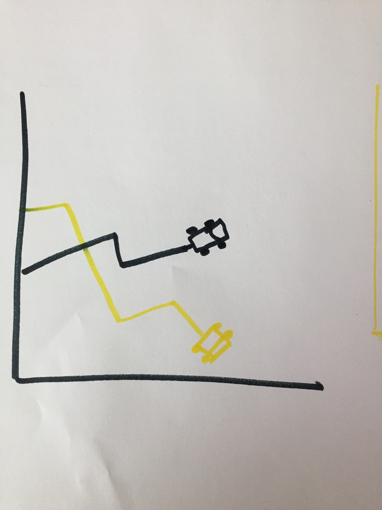

Uber launched with in 2010 with a simple, yet revolutionary premise. Tap a button and within minutes, a driver would arrive to take you to your destination. Over the past couple years, Uber has grown at an extraordinary pace, serving millions of rides per day across the globe and defining new methods of transportation across cities.
The purpose behind our project is to understand what impact Uber has had on transportation in New York City, as well as how specifically the company has spread its reach through the city.
Our goals include educating our audience about Uber’s growth in New York City through 2014 and 2015, visualizing what impact Uber has had on the taxi cab system in the city, as well as understanding what neighborhoods of New York City are most affected by the growth of this new transportation juggernaut.
Tasks for our team include wrangling, cleaning, and organizing the Uber pickup data and other for-hire vehicle data. We need to make sure all the data are consistent and in the same structures.
Other tasks include deciding storytelling methods that will be effective, as well as designing mockups and storyboards of our visualizations. We also need to work on implementing the visualizations and make sure everything looks clean and polished at the end.
We had four main questions that helped us develop how we wanted to visualize our data and think about how we wanted to tell the story of Uber in New York City.
How quickly has Uber grown in New York City?
This was one of our most presssing questions, and we believe this data can reveal a lot about this question. A timeline and map can help tell the story about how quickly this has happened.
Do changes in weather have an impact on Uber surges?
We had to incorporate weather data from an additional source. We also felt this was a good area to explore implementing the coordinated view.
Does the amount of Uber pickups vary across neighborhoods with different socioeconomic demographics?
We have yet to figure this out, but feel as if it is a very interesting problem to tackle and solve. Sure, this new technology has generally come in for the better, but does it favor some members of society over others?
How does Uber's growth compare to those of other for-hire vehicles?
We also have data on other for-hire vehicles in NYC, such as taxis and Lyft. It'd be interesting to visualize how much of a negative impact (if at all) Uber has had on these companies.
Our primary data source is this GitHub repository from FiveThirtyEight: https://github.com/fivethirtyeight/uber-tlc-foil-response. Uber is a private company, so normally they wouldn’t release their data, but they gave this up in a freedom of information request FiveThirtyEight submitted to NYC’s Taxi and Limousine Commission. According to FiveThirtyEight, the data includes information on over 4.5 million Uber pickups in New York City from April 2014 to September 2014, as well as 14.3 million pickups from January 2015 to June 2015. There is also aggregated data on taxis and other for-hire vehicles operating in NYC. The data is split into CSV files, which we know how to load properly into d3. We can create object structures around data, time, latitude, and longitude of the pickups.
Initially, we've been having some issues with the data because the sets are so large. We are currently working on ways to properly sort and clean the data, so we don't have these issues. A lot of the runtime burden is falling on the browsewr, and we want to see if there's a way to place that on the server instead.
Here are a few of the sketches we've worked on so far.
